Урок 2. ESP32 MicroPython. Первая программа.
Что такое MicroPython и его особенности рассмотрели на вводном уроке, а на первом уроке познакомились со средой разработки Thonny Python IDE и установили прошивку на ESP32 и ESP8266. Пришло время научиться писать программы на MicroPython. В качестве первого примера чаще всего показывают мигание встроенным светодиодом на отладочной плате, поэтому и я не буду отклоняться от данной традиции. На этом уроке мы научимся мигать светодиодом на плате ESP32 и ESP8266.
И перед началом уроков давайте договоримся о том, что я не буду все примеры показывать на обоих платах ESP32 и ESP8266, так как код для них в большинстве случаев одинаковый, отличаться могут только пины подключения. Если в коде будут значительные отличия, я сделаю на этом акцент.
Распиновка плат.
Для того чтобы понимать какими контактом на плате будем управлять, рассмотрим распиновку плат ESP32 и ESP8266.
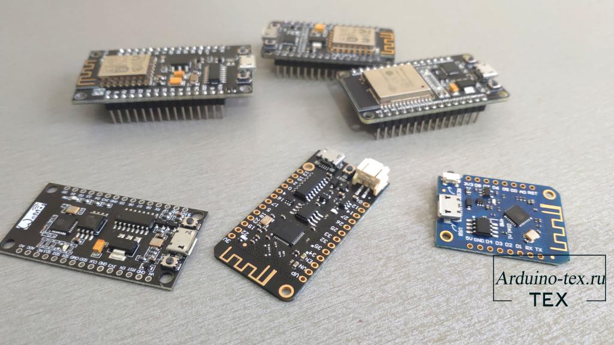
Распиновка ESP32.
На изображении серым цветом обозначены номера GPIO, которые мы будем использовать при написании кода. В большинстве случаев на плате они имеют обозначение с буквой D перед номером пина.
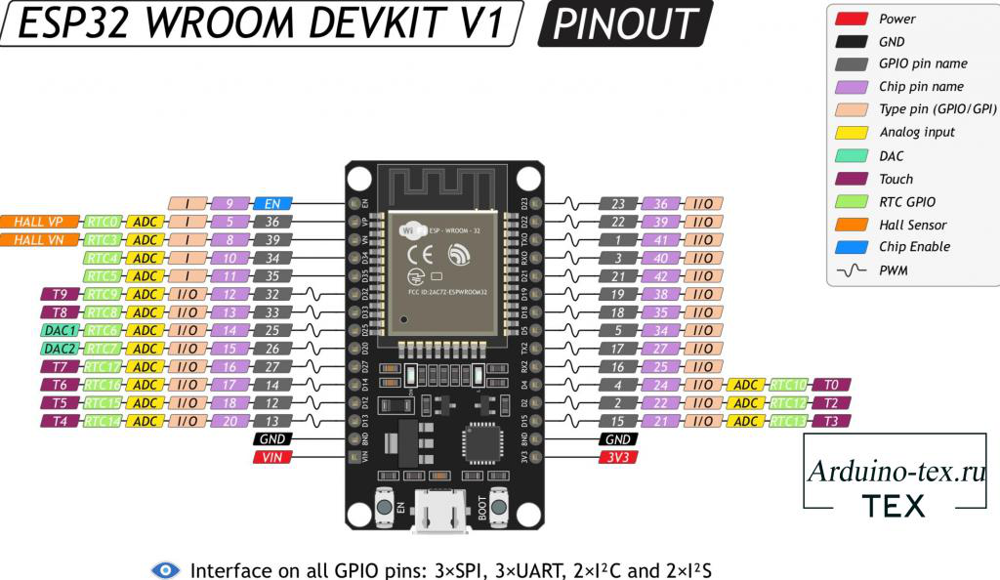
Более подробно про назначение контактов вы можете прочитать в статье «Распиновка ESP32, какие контакты GPIO можно использовать, а какие нет?».
Распиновка NodeMCU.
С NodeMCU всё немного сложнее, так как контакты D0 - D8 не соответствуют GPIO микроконтроллера, который будем использовать.
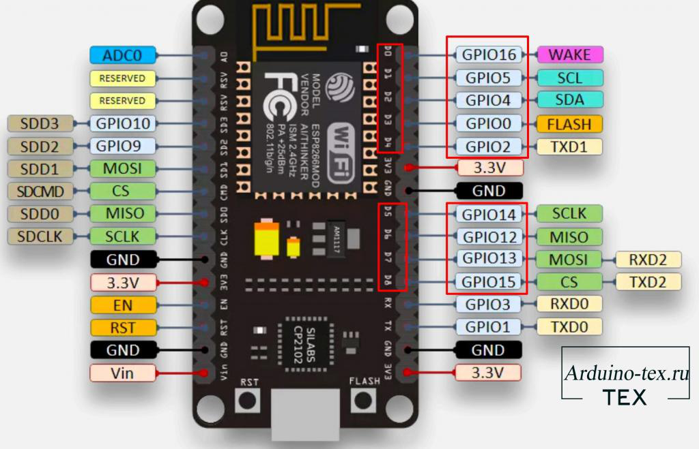
Например, если нам нужно управлять контактом, который на плате называется «D4», он соответствует GPIO2. В коде нам нужно указывать «2», а не 4. Вот такая путаница при работе с данной платой.
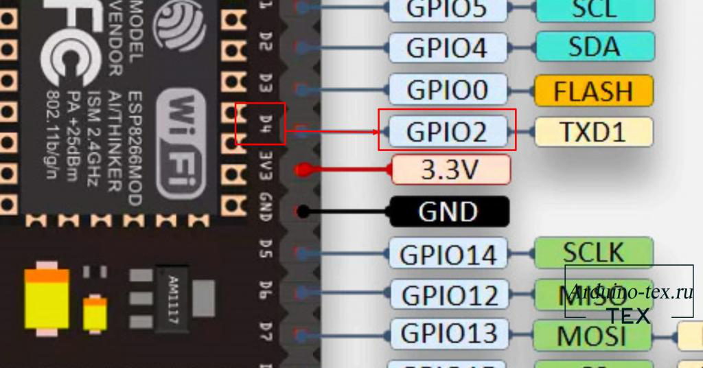
Подробное описание и распиновку плат NodeMCU, WeMos D1 Mini и ESP-01 смотрите вот в этой статье.
Программа на MicroPython «мигание светодиодом».
Для того чтобы управлять контактами микроконтроллера, нужно подключить библиотеку «machine». Делается это с помощью команды:
import machine
Copy
Для тестирования все команды будем отправлять через консоль REPL.
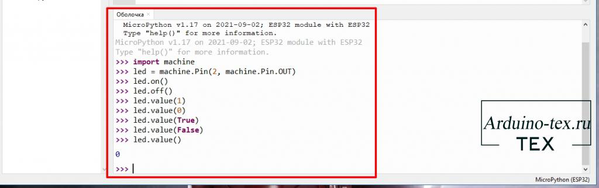
Затем нужно инициализировать пин как выход. Для ESP32 DEVKIT V1 и NodeMCU встроенный светодиод подключен к GPIO2.
led = machine.Pin(2, machine.Pin.OUT)
Copy
Сейчас мы можем отправить команду на включение светодиода.
led.on()
Copy
Затем отправим команду на выключение светодиода.
led.off()
Copy
Используя стрелки вверх и вниз на клавиатуре можно выбрать одну из ранее введённых команд, тем самым включая и выключая светодиод.
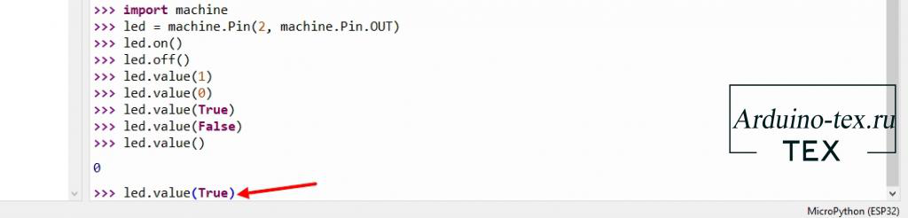
Включить и выключить светодиод можно также выполнив следующие команды.
led.value(1)
led.value(0)
Copy
Для включения светодиода отправляем значение 1, для выключения значение 0. Или True – логическая единица, False - логический ноль.
led.value(True)
led.value(False)
Copy
Если вызвать данную команду «led.value()» без передачи значения, то в ответ получим логическое состояние контакта 1 или 0 (3,3В или 0).
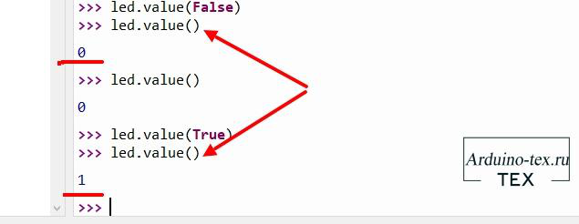
Как мы видим, через консоль управлять светодиодом достаточно просто. Как же сделать мигание светодиода постоянным, как в примере «Blink» в среде Arduino IDE?
Очерёдность исполнения файлов в MicroPython.
Для того чтобы код выполнялся на микроконтроллере, нужно создать файл с кодом. Но тут есть один момент, который нужно учитывать. Если открыть проводник файлов, то увидим, что на микроконтроллере уже есть один файл «boot.py».
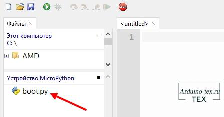
Он создаётся автоматически при прошивке микроконтроллера и изменять его нельзя на данном этапе обучения. Данный файл выполняется в первую очередь при подаче питания на ESP32.
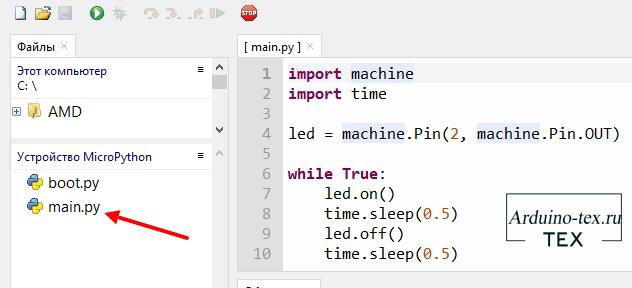
Затем микроконтроллер выполняет файл «main.py». Его то мы и создадим для нашей программы.
Программа MicroPython. Мигаем светодиодом на плате ESP32.
Давайте напишем программу. Для этого подключим необходимые библиотеки: machine и time.
import machine
import time
Copy
С библиотекой «machine» мы уже знакомы. Библиотека «time» понадобится для создания задержки времени между включением и выключением светодиода. Далее в коде инициализируем второй пин (GPO2) как выход.
led = machine.Pin(2, machine.Pin.OUT)
Copy
Чтобы светодиод мигал постоянно, напишем цикл, который будет выполняться бесконечное количество раз.
while True:
Copy
led.on()
Copy
time.sleep(0.5)
Copy
led.off()
Copy
time.sleep(0.5)
Copy
Так как цикл будет выполняться бесконечное количество раз, пока на микроконтроллер подаётся питание, то включение и выключение светодиода будет повторяться. Сейчас осталось сохранить код на ESP32 с названием «main.py».
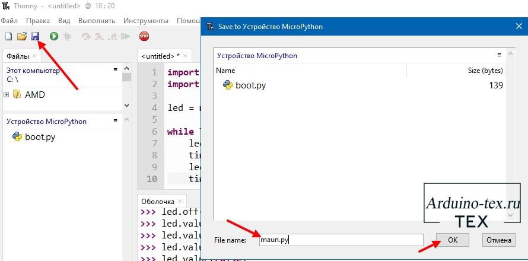
Как видим, светодиод мигает и, если мы отключим питание и снова подключим микроконтроллер к источнику питания, светодиод продолжит мигать с заданным интервалом времени.
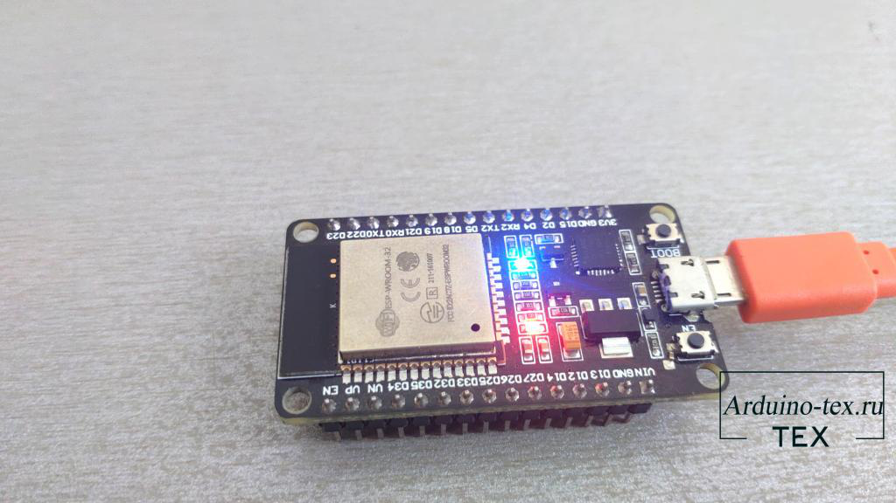
В следующем уроке рассмотрим переменные и основные математические действия.
Понравился Урок 2. ESP32 MicroPython. Первая программа? Не забудь поделиться с друзьями в соц. сетях.
А также подписаться на наш канал на YouTube, вступить в группу Вконтакте, в группу на Facebook.
Спасибо за внимание!
Технологии начинаются с простого!
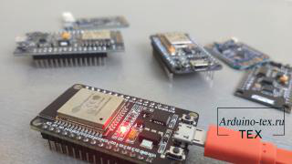
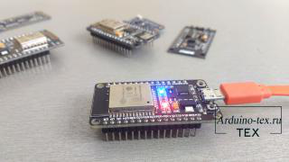
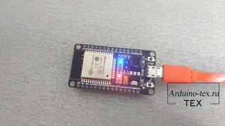
Скачивая материал, я соглашаюсь с Правилами скачивания и использования материалов.
|
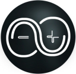 |
Программа MicroPython. Мигаем светодиодом на плате ESP32.py |
1 Kb |
531 |
Ваше Имя*
[CODE]
[BBCODE]
Отправить
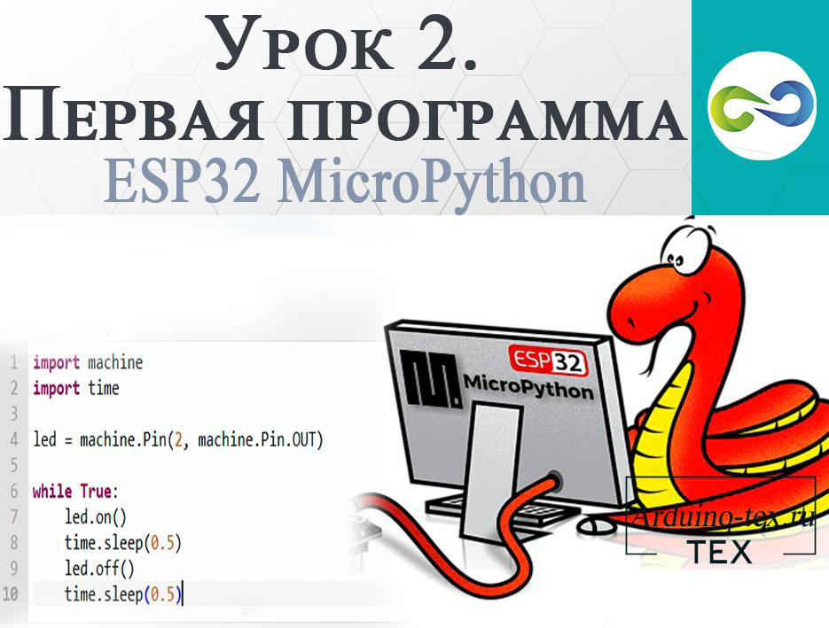
Уроки ESP32, ESP8266 на MicroPython
21 января , 2022
Комментариев:0
Файлов для скачивания:1
Фото:3
Понравилась статья? Нажми
Cлучайные товары
Серво Micro 9 г Sg90s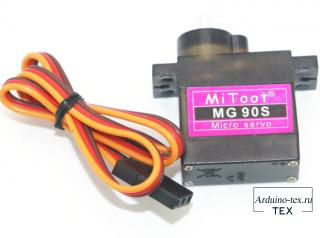
Датчик жестов, освещенности, цвета и приближения APDS-9960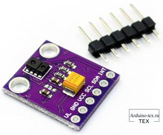
Читайте также
KY-013 – модуль аналогового датчика температуры. Подключение к Arduino.
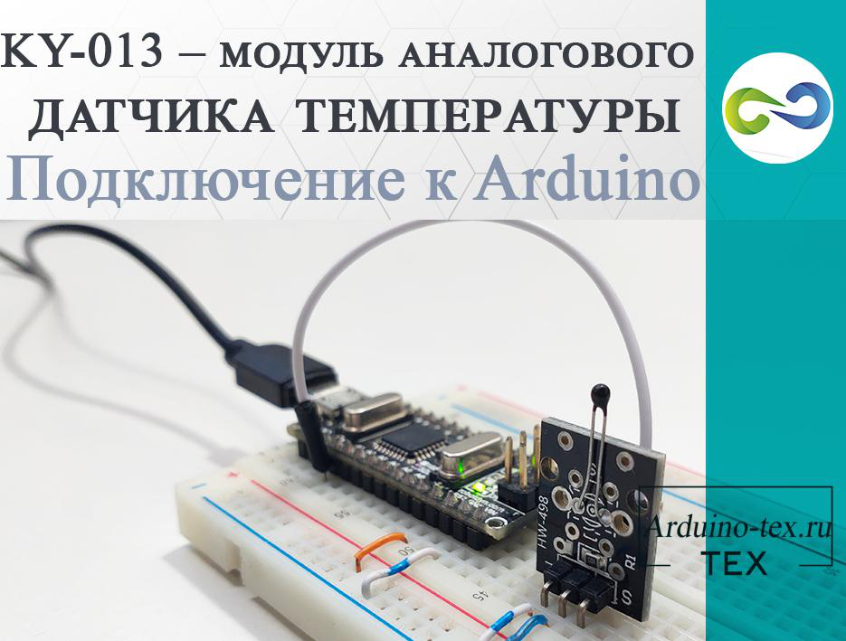
KY-021 – Модуль на основе геркона. Подключение к Arduino.
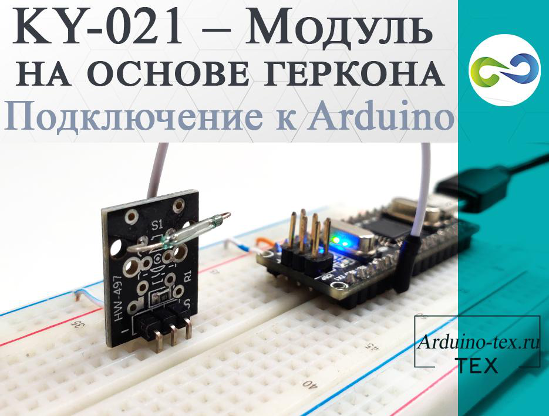
Описание конфигурационного файла. Утилита CFG Edit.
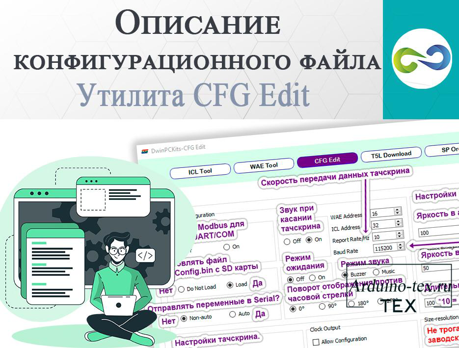
Мы в соц сетях